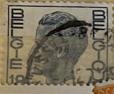
| SOURCE | TITLE| IMAGE MATCH | click to source page |
| eBay | Belgium - 1971 - King Baudouin - 9Fr - #2090 | eBay | 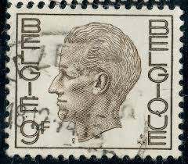 |
| Encyclopaedia Philatelica | Koning Boudewijn: langlopende postzegel - Encyclopaedia Philatelica | 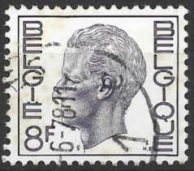 |
| eBay | Belgium - 1975 - King Baudouin - New Value - 13Fr - #2095 | eBay |  |
| HipStamp | Belgium 761 King Baudouin 1972 | Europe - Belgium & Colonies, General Issue Stamp / HipStamp |  |
| Stampedia | stampedia BELGIUM STAMP catalog | 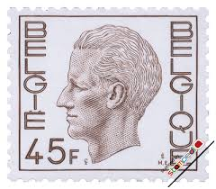 |
| eBay UK | Belgium - 1971 - King Baudouin - 20Fr - #2104 | eBay UK | 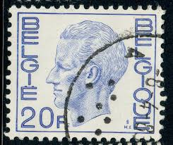 |
| eBay | Belgian Stamps 1971-1980 Year of Issue for sale | eBay | 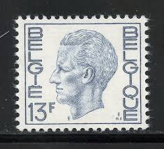 |
| iStock | Belgium Stamp Shows Portrait Of king Baudouin Stock Photo - Download Image Now - iStock | 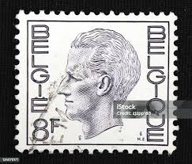 |
| Find Your Stamps Value | Value of 14f belgique belgie stamp stamps | 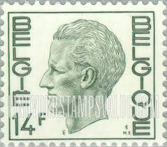 |
| HipStamp | Belgium 754 Used King Baudouin (BP16215) | Europe - Belgium & Colonies, General Issue Stamp / HipStamp | 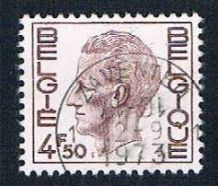 |
| Find Your Stamps Value | Value of belgie belgique 4.50f stamps | 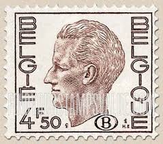 |
| iStock | Stamp Printed In Belgium Shows Vesalius Stock Photo - Download Image Now - 1942, Anatomist, Belgian Culture - iStock | 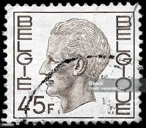 |
| Free stamp catalogue | Stamps from Belgium - Freestampcatalogue.com - The free online stampcatalogue with over 500.000 stamps listed. | 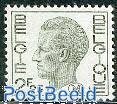 |
| HipStamp | Belgium 769 (used) 15f King Baudouin, lt vio (1971) | Europe - Belgium & Colonies, General Issue Stamp / HipStamp |  |
| Alamy | Postage stamp from Belgium in the King Baudouin Type "Elström" series issued in 1974 Stock Photo - Alamy | 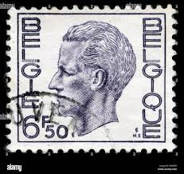 |
| lastdodo.com | Harry Elström [1906-1993] Stamp catalogue - LastDodo | 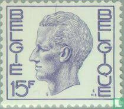 |
| Todocolección | sellos de bégica de 1932. rey alberto i - Buy Antique stamps of Belgium on todocoleccion | 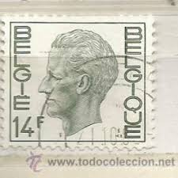 |
| Alamy | BELGIUM - CIRCA 1971: a stamp printed in Belgium shows Dr. Jules Bordet (1870-1945), Was a Belgian Immunologist and Microbiologist, 1919 Nobel Prize W Stock Photo - Alamy | 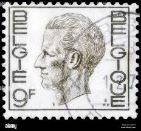 |
| Dreamstime.com | King Baudouin and Queen Fabiola Editorial Image - Image of stamp, kingdom: 95095115 | 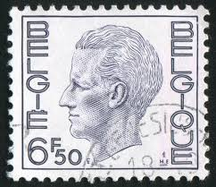 |
| Shutterstock | Gdr Circa 1963 Stamp Printed Gdr Stock Photo 88255609 | Shutterstock | 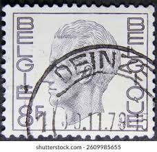 |
| Shutterstock | 4+ Thousand Belgium Postcards Royalty-Free Images, Stock Photos & Pictures | Shutterstock | 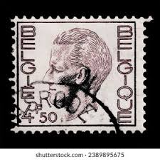 |
| HipStamp | Belgium #754 red brown used 1974 King Baudouin 4.50f brown | Europe - Belgium & Colonies, General Issue Stamp / HipStamp | 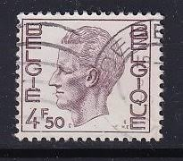 |
| Dreamstime.com | Vintage Stamp Printed in Belgium 1936 Shows Coat of Arms with a Lion Editorial Stock Photo - Image of lion, centime: 164075538 | 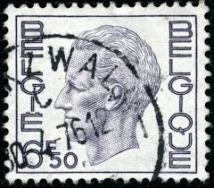 |
| Colnect | Belgium : Stamps [Series: King Baudouin Type "Elström"] [1/17] : Colnect 📮 | 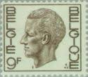 |
| All Numis | Stamps Catalog - List of stamps for King Baudouin I, Belgium - page 8 | 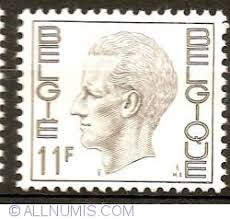 |
| 123RF | CZECHOSLOVAKIA - CIRCA 1945 A Stamp Printed In The Czechoslovakia Shows Portrait Of General Milan Rastislav Stefanik, Slovak Politician, Diplomat And Astronomer, Circa 1945 Stock Photo, Picture and Royalty Free Image. Image 18145251. | 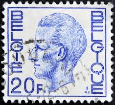 |
| ebid.net | Belgium 1971 - 8f grey - King Baudouin - used 2 on eBid United Kingdom | 203627531 | 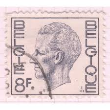 |
| allnumis.com | 20 Francs - King Baudouin Type "Elström", duplicates - ZZ. Duplicates - Stamp - 51170 | 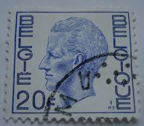 |
| fil-mag.be | coil stamps | 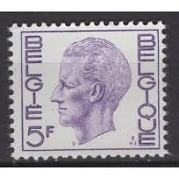 |
| Alamy | BELGIUM - CIRCA 1976: a stamp printed in Belgium shows Blind leading the blind, Painting by Pieter Brueghel the Elder, Netherlandish Painter, circa 19 Stock Photo - Alamy | 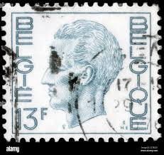 |
| iStock | Belgium Coat Of Arms Postage Stamp Stock Photo - Download Image Now - Belgium, Coat Of Arms, Industry - iStock | 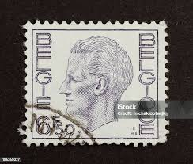 |
| stamplibrary.info | Belgian Stamps Archive - Stamp Library | 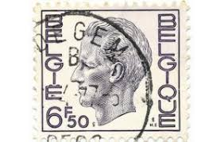 |
| Alamy | Boudewijn i hi-res stock photography and images - Alamy | 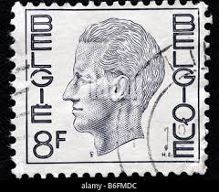 |
| Shutterstock | Belgium Circa 2000 Cancelled Postage Stamp Stock Photo 2355985201 | Shutterstock | 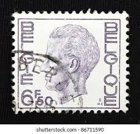 |
| 123RF | BELGIUM - CIRCA 1971 A Stamp Printed In BELGIUM Shows The Portrait Of A Baudouin I 1930-1993 Reigned As King Of The Belgians, Red , Series, Circa 1971 Royalty-Vrije Foto, Plaatjes, Beelden | 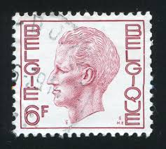 |
| Alamy | Postage stamp from Belgium in the King Baudouin Type "Elström" series issued in Stock Photo - Alamy | 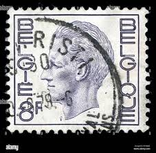 |
| HipStamp | Browse Products in Europe > Belgium & Colonies / HipStamp | 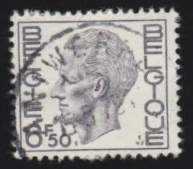 |
| iStock | Belgium Postage Stamp Stock Photo - Download Image Now - Austria, Austrian Culture, Belgium - iStock | 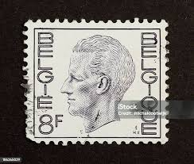 |
| ProBoards | Postmark Calendar | The Stamp Forum (TSF) | 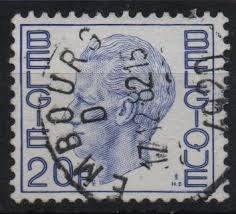 |
| Shutterstock | 1+ Thousand King Leopold I Royalty-Free Images, Stock Photos & Pictures | Shutterstock | 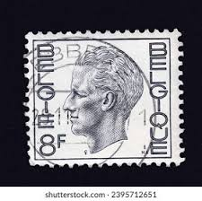 |
| Alamy | Postage stamp from Belgium in the King Baudouin Type "Elström" series issued in 1977 Stock Photo - Alamy |  |
| CollectorBazar | Beliguim - Used - King - NPPA5529 | 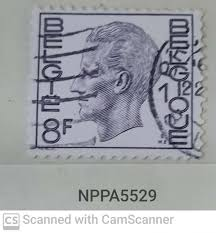 |
| Dreamstime.com | Baudouin of Belgium, King of the Belgians Editorial Stock Image - Image of postage, retro: 177157054 | 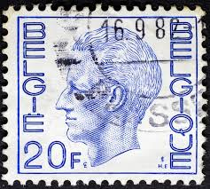 |
| Todocolección | bélgica 1972. rey balduino, 5 francos azul viol - Buy Antique stamps of Belgium on todocoleccion | 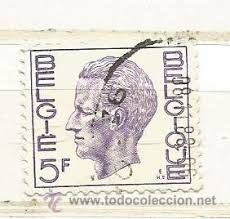 |
| Dreamstime.com | BELGIUM - CIRCA 1958: a Stamp Printed in Belgium Shows King Baudouin, `Marchant` Type, Circa 1958. Editorial Photography - Image of belgien, baudouin: 155837827 | 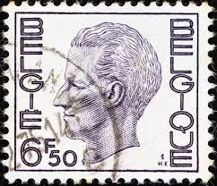 |
| Shutterstock | 8+ Hundred Baudouin Belgium Royalty-Free Images, Stock Photos & Pictures | Shutterstock | 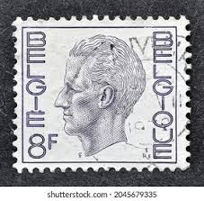 |
| Shutterstock | 4+ Hundred King Baudouin Belgians Royalty-Free Images, Stock Photos & Pictures | Shutterstock | 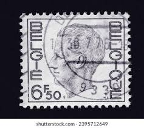 |
| Todocolección | belgica nº yvert 2780/1*** año 1998. cine belga - Buy Antique stamps of Belgium on todocoleccion | 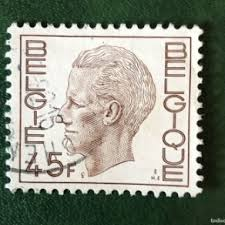 |
| Todocolección | belgica 1966 -yvert 1371 ** nuevo sin fijasello - Buy Antique stamps of Belgium on todocoleccion | 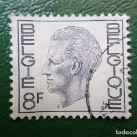 |
| Alamy | Postage stamp from Belgium depicting a crossbow man with train, issued for payment of parcel post package delivery Stock Photo - Alamy | 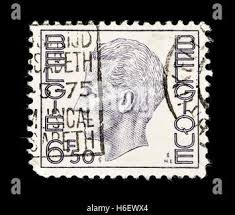 |
| mintindia.in | www.mintindia.in: www.mintindia.in:We have launched this website with primary objective to spread education about various coins of India and around the earth to help each numismatist, Introducing huge collections of the antique material |  |
| Shutterstock | 816 Baudouin Belgium Royalty-Free Images, Stock Photos & Pictures | Shutterstock | 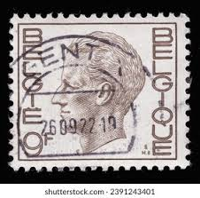 |
| Shutterstock | Ankaratürkiye 07292023 Cancelled Postage Stamp By Stock Photo 2339311481 | Shutterstock | 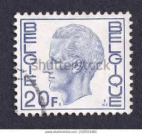 |
| Todocolección | belgica 1920 - usado - Buy Antique stamps of Belgium on todocoleccion | 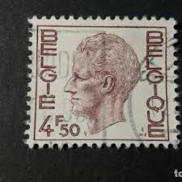 |
| Shutterstock | United States Circa 1986 Stamp Printed Stock Photo 105267512 | Shutterstock | |
| Alamy | Gotonysmith belgie stamp hi-res stock photography and images - Alamy | |
| Shutterstock | 8+ Thousand Belgium King Royalty-Free Images, Stock Photos & Pictures | Shutterstock | |
| Alamy | King baudouin of belgium hi-res stock photography and images - Alamy | |
| eBay | Belgium - 1976 - King Baudouin - New Value - 11Fr - #2093 | eBay |